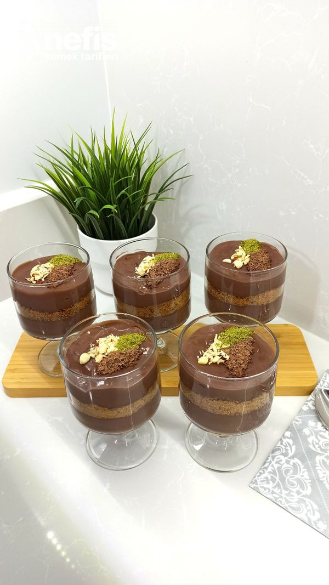

... Karamel Bisküvili Çikolatalı Kuplar ...
Karamel ve çikolata seviyorsanız bu birliktelik aklınızı başınızdan alacak.
TARİF : Zeynep Caliskan
Kaç Kişilik : 4 - 6 Kişilik Hazırlama Süresi : 20 dakika Pişirme Süresi : 20 dakika
Karamel Bisküvili Çikolatalı Kuplar Tarifi İçin Malzemeler
- 1 litre süt
- 2 yemek kaşığı tepeleme kakao
- 3 yemek kaşığı tepeleme nişasta
- 1 yemek kaşığı un
- 1 adet yumurta sarısı
- 1 su bardağı şeker
Piştikten sonra
- 1 paket bitter çikolata
Çırparken
- 1 yemek kaşığı toz krem şanti
- Yarım su bardağı soğuk su veya süt
Ara katman
- 1 paket karamelli bisküvi
Karamel Bisküvili Çikolatalı Kuplar Tarifi Nasıl Yapılır?
- Krema malzemeleri tencereye alınır.
- Sürekli karıştırarak kıvam alana kadar pişirilir.
- Kaynadıktan sonra hızlıca cirpilarak 2 dakika daha pişirilir. Altı kapatılır ve çikolata eklenir.
- Ara ara karıştırılırak tamamen sogumasi beklenir.
- Toz santi ve soğuk su azar azar eklenerek kıvamı ayarlanır. Bisküvi rondodan geçirilir.
- Kuplara önce muhallebi sonra ortaya bisküvili konulur.
- Üzeri tekrar muhallebi ile kapatılır.
- Buzdobında tamamen soğuyunca süslenerek servis edilir.
- Dilerseniz araya meyve parçaları ekleyebilirsiniz. Afiyet olsun
